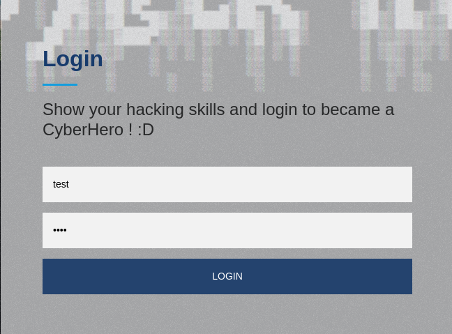
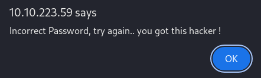
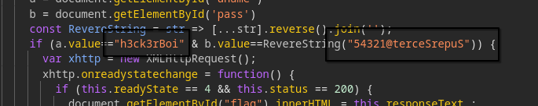

Introduction
Name: CyberHeroes
Challenge type: Web challenge
Rated difficulty: Easy
Objective: Bypass the login form to get the flag
Nmap Scan Results
PORT STATE SERVICE VERSION
80/tcp open http Apache httpd 2.4.48 ((Ubuntu))
|_http-title: CyberHeros : Index
|_http-server-header: Apache/2.4.48 (Ubuntu)Enumerating HTTP
let's intercept this request so that we can test stuff e.g SQLi, username enumeration etc etc

but instead we get this an unexpected response..

after this, i knew the website was authenticating us client side which is a bad idea.
after opening dev tools and going to login.html we get some hardcoded credentials

h3ck3rBoi:54321@terceSrepuS
but the password string is reversed, let's fix that
──(axoryn㉿vbox)-[~] └─$ echo '54321@terceSrepuS' | rev
XXXXXXXXXXXi'm not showing the real password haha
after that you can login to the web app and get the flag!!